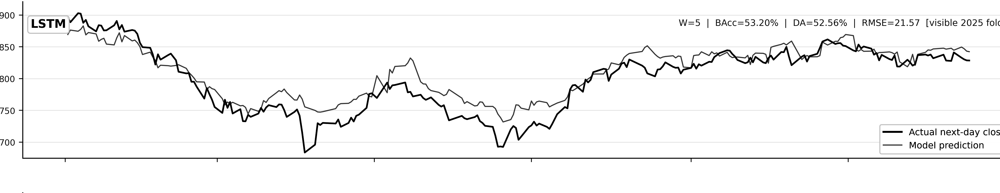

Market series
SET50 daily index

Features are reconstructed using only information available by the close of day t.

Out-of-sample sentiment with date, ticker and relevance filtering.
Rolling 60-day decomposition compared with matched technical inputs.
Market-only controls and a separate Bull/Bear/Leader sentiment audit.
Bull/Sideway/Bear routing with train-only SHAP and a LIME fidelity check.
Later-period stress testing and frozen SET100 evaluation.
LSTM-CNN-Attention across four held-out years and five seeds.
Largest selective forecasting gain.
Gain over equal-call and near-cost controls; intrinsic endpoint.
VMD effect: -0.60 to +0.35 percentage points.
Predicted news: no consistent forecasting gain.
SET100 transfer: lower mean balanced accuracy for all five models.
Improvements were architecture- and endpoint-dependent rather than universal.